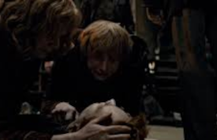

Teorias
Neville Longbottom usa a varinha errada
Uma das primeiras coisas que os fãs aprendem é que a varinha escolhe o bruxo. O problema é que Neville Longbottom usava a varinha de seu pai nos primeiros cinco anos em Hogwarts e repetidamente teve problemas para fazer sua magia funcionar corretamente. O cenário muda quando sua varinha quebra e Neville parece finalmente se encontrar, com poder total.

Neville Longbottom
George não consegue mais conjurar patronos
A teoria diz que após a morte de Fred, em Relíquias da Morte, George nunca mais conseguiu conjurar um patrono, pois todas as suas memórias mais felizes eram com o irmão.

Morte de Fred em Relíquias da Morte